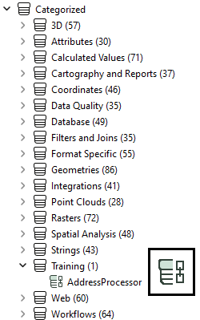
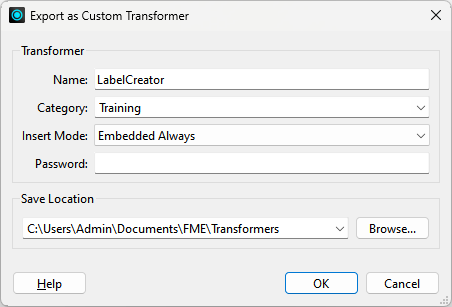
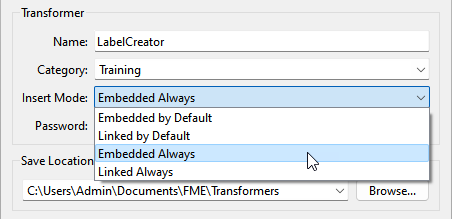
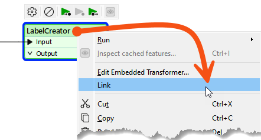

Learning Objectives
After completing this lesson, you’ll be able to:
There are two types of custom transformers.
Workspaces store the definition of embedded transformers in the workspace itself. Each instance of the custom transformer refers to that embedded definition. Only the workspace with the embedded transformer has access to that custom transformer.
A linked transformer has its definition stored outside the workspace in a separate file. Each instance of a linked transformer relies on that external definition. Any workspace can have access to that custom transformer.
On a workspace canvas, embedded transformers are identified by their green color, while linked transformers are colored cyan:
Both types of transformers can be used in an FME workspace, and each type has various advantages and disadvantages.
Embedded Transformers
Embedded transformers are easier to manage, need no external files, and store their definition directly in the workspace. They are handy for tidying a workspace and employing advanced functionality like parallel processing.
However, sharing and reusing content is more complex with an embedded transformer. You can only easily share the custom transformer with other users if you give them a copy of the same workspace. Additionally, it takes work to maintain a consistent definition among several users.
Linked Transformers
Linked transformers are a little more complicated to manage. They exist as a file (.fmx) outside of the workspace, which is less convenient, and when used to employ advanced functionality such as loops, they can be more complex.
However, a linked custom transformer is a little easier to edit (you open the .fmx file rather than the .fmw file) and is much easier to share among users. The file can be given to any FME author, and any number of authors can point their workspace to the same custom transformer file.
Sharing the same file is useful because any changes to the definition automatically propagate to all workspaces that use it.
Like embedded transformers, linked transformers appear in the transformer gallery and Quick Add dialog. Also, notice that they have a special icon to signify that you are about to use a linked version rather than the embedded version:

All custom transformers start with an embedded definition. To create an external definition, export the custom transformer using the Export as Custom Transformer option on the menu bar:

At this point, a dialog opens in which you can confirm the transformer name and category, plus some other parameters, including the save location:

Name and category are straightforward, so let’s look at other options.
Insert Mode
We know that the definition of a custom transformer can be stored either in a workspace (embedded) or in a separate file (linked). Therefore, each instance of a custom transformer points to an embedded or linked definition.
But it’s important to know that each instance can change its definition source. For example, you can switch an instance of a custom transformer linked to a file definition to embedded (in which case the external definition gets embedded into the workspace).
Likewise, you can switch an instance that points to an embedded definition to point to an external file.
As the author of a custom transformer, I might want to control the initial state when I place an instance. The Insert Mode parameter controls this behavior.
There are four different modes:

Let’s say I export my custom transformer with Insert Mode set to one of the Embedded choices. An FMX file now stores the definition, and FME will recognize it as an available transformer. But when a user places a new instance in their workspace (say with Quick Add or the Transformer Gallery), the definition of the custom transformer is copied from the FMX file and embedded into the workspace.
If I choose Embedded By Default, although each transformer instance starts as Embedded, the user can switch the instance to “Linked” at any point.
If I choose Embedded Always, each transformer instance starts as embedded and must stay that way. A user cannot switch it to Linked at a later point.
Similarly, I could export my custom transformer in Linked mode. When a user places a new instance, the transformer's definition remains in my FMX file, with the instance linked.
If I choose Linked By Default, each instance of the transformer starts as Linked but can be switched to Embedded at any time.
If I choose Linked Always, each instance starts as Linked and stays that way. It cannot be switched to Embedded at a later point.
If you are the author of a custom transformer and want to share it with other authors, you should pay attention to Insert Mode. It gives you control over how they will use that transformer.
Which Mode to Use
Embedded Always is a good choice when the person using the transformer is less experienced with FME; it’s easier to manage, and if they make changes, they won’t affect other people. Embedded is also a good choice when you intend for individuals to use the custom transformer (i.e., not sharing it as a group).
Linked Always is a good choice when you intend to have users share the custom transformer. Because it is linked, the users will always receive updates if the transformer definition is changed, and because the definition is shared, it becomes a standard applied to all users.
You should only use a “By Default” setting and allow type switching when you trust the end-user is experienced in FME and can understand the consequences.
Password
The password field allows you to password-protect the custom transformer. This setting makes it impervious to edits from unauthorized persons. Additionally, the contents are (very mildly) encrypted, so unauthorized users cannot copy them by opening the source file in a text editor.
This setting allows authors to make transformers available for purchase without fear of copying or editing their work. Of course, it’s essential not to forget or lose the password yourself if you wish to make edits!
Save Location
FME has a specific installation folder where it saves custom transformer files. If you save custom transformers in this folder, you can find them in Workbench and use them like any other transformer. If you save transformers elsewhere, you won’t be able to find them in Workbench unless you add the path under Utilities > FME Options > Default Paths.
Default Paths are a handy feature. See the documentation for more information.
Editing a Linked Custom Transformer
When you click the OK button on the Export as Custom Transformer dialog, FME exports the transformer to a separate (.fmx) file. You can then edit that file immediately inside a new instance of FME Workbench.
Essentially, editing a custom transformer works like editing a workspace: you open the file in FME Workbench and edit as required.
Remember that any changes you make will affect each instance of the Custom Transformer linked to this file.
Searching for bugs in an embedded custom transformer before exporting it is best. Tools such as Feature Caching and Run with Breakpoints do not work inside exported transformers.
Another way to explain the options is to think of custom transformers like a recipe.
- An embedded custom transformer is like... a recipe on the back of a napkin.
- A linked custom transformer saved to your operating system user profile is like... your personal recipe book.
- A linked custom transformer saved to a shared folder is like... a recipe book used by all chefs in your kitchen, or a corporate restaurant recipe book used by all franchises.
- A custom transformer published to the FME Hub is like... a recipe in a published cookbook you can buy at a bookstore.
When publishing a workspace that uses custom transformers to FME Flow, you must publish the custom transformer with the workspace.
You have two general options for how you'd like to share the transformer once it's on FME Flow:
Upload to Repository
You can publish the custom transformer to the repository, and users who have repository access can access it. Other workspaces can use them by manually setting their source parameters.
Upload to a shared resource folder.
If you upload your custom transformer to the FME Flow shared resource folder, you make it accessible to all other workspaces run from FME Flow from any repository. For workspaces to use them, you have to upload resources to the applicable subdirectory under Engine. For example, you must upload custom transformers to the Engine > Transformers folder.
The shared resource folder is generally a better option if you want your custom transformer to be widely available.
Here is what we recommend:
The action is very straightforward when the Insert Mode of a custom transformer allows type switching. Right-click on the instance and choose the required type:

In the above screenshot, the user is switching from Embedded to Linked. Of course, switching to Linked requires the custom transformer to be exported already.
When you switch from embedded to linked, the embedded definition is closed. The transformer instance then points to the linked definition.
When you switch from linked to embedded, the contents of the FMX file are copied and embedded in the workspace. The transformer instance then points to the embedded definition.
If there is more than one instance of the Custom Transformer, FME asks whether you want to switch all of them:

The usual answer is yes because having the same embedded and linked transformer could be confusing! If you answer no, please remember that the transformer you clicked on will be linked (but none of the other instances will).
Switching from Embedded to Linked only works if you have not modified the embedded transformer.
In other words, if you embed a linked transformer and then make changes to the embedded definition, you won’t be able to revert to the linked version.